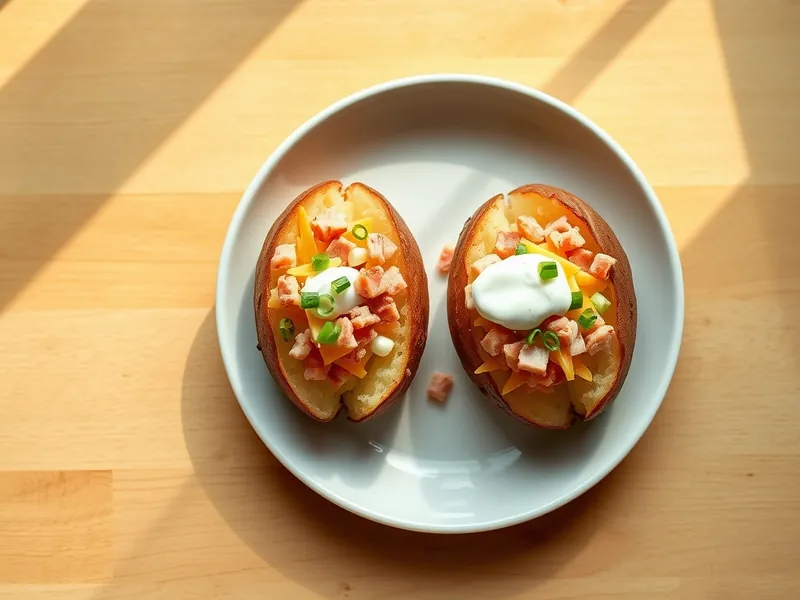

Печёная картошка в микроволновке с сыром и ветчиной
Крупная картофелина, запечённая в кожуре за 10 минут, с маслом, ветчиной и расплавленным сыром
20 мин2 порц.476 ккал на порциюБ 18 · Ж 26 · У 41Европейская кухня
Открыть в приложении: порции, таймеры, список покупок
Продукты на 2 порц.
- Картофель2 шт
- Ветчина80 г
- Сыр твёрдый60 г
- Сливочное масло20 г
- Соль1 щеп.
- Сметана 20% по желанию2 ст. л.
- Зелёный лук по желаниюпо вкусу
Как готовить
- Две крупные картофелины тщательно вымойте щёткой и обсушите. Наколите вилкой со всех сторон по 6-8 раз, чтобы кожура не лопнула.
- Положите на тарелку и готовьте в микроволновке на полной мощности 5 минут, переверните и готовьте ещё 4-6 минут, пока нож не будет входить легко.
- Пока картошка готовится, нарежьте ветчину мелким кубиком, сыр натрите.
- Сделайте сверху глубокий крестообразный надрез и прижмите бока, чтобы мякоть раскрылась. Посолите, положите масло и разомните мякоть вилкой прямо в кожуре.
- Выложите ветчину, посыпьте сыром и верните в микроволновку на 1 минуту, пока сыр не расплавится. Подавайте со сметаной и зелёным луком.
Совет. Выбирайте картофелины одного размера, около 250 г: тогда они приготовятся одновременно.